spanishoddata is an R package that provides functions for downloading and formatting Spanish open mobility data released by the Ministry of Transport and Sustainable Mobility of Spain (MITMS 2024).
It supports the two versions of the Spanish mobility data that consists of origin-destination matrices and some additional data sets. The first version covers data from 2020 and 2021, including the period of the COVID-19 pandemic. The second version contains data from January 2022 onwards and is regularly updated. Both versions of the data primarily consist of mobile phone positioning data, and include matrices for overnight stays, individual movements, and trips of Spanish residents at different geographical levels. See the package website and vignettes for v1 and v2 data for more details.
spanishoddata is designed to save time by providing the data in analysis-ready formats. Automating the process of downloading, cleaning, and importing the data can also reduce the risk of errors in the laborious process of data preparation. It also reduces computational resources by using computationally efficient packages behind the scenes. To effectively work with multiple data files, it’s recommended you set up a data directory where the package can search for the data and download only the files that are not already present.
Examples of available data

Figure 1: Example of the data available through the package: daily flows in Barcelona
To create static maps like that see our vignette here.

Figure 2: Example of the data available through the package: interactive daily flows in Spain

Figure 3: Example of the data available through the package: interactive daily flows in Barcelona with time filter
To create interactive maps see our vignette here.
Install the package
The package is not yet available on CRAN.
You can install the latest version of the package from rOpenSpain R universe:
install.packages("spanishoddata",
repos = c("https://ropenspain.r-universe.dev",
"https://cloud.r-project.org"))Alternative installation and developemnt
Alternative way to install the package from GitHub:
if (!require("remotes")) install.packages("remotes")
remotes::install_github("rOpenSpain/spanishoddata",
force = TRUE, dependencies = TRUE)For Developers
To load the package locally, clone it and navigate to the root of the package in the terminal, e.g. with the following:
gh repo clone rOpenSpain/spanishoddata
code spanishoddata
# with rstudio:
rstudio spanishoddata/spanishoddata.RprojThen run the following command from the R console:
devtools::load_all()Load it as follows:
Set the data directory
Choose where spanishoddata should download (and convert) the data by setting the data directory following command:
spod_set_data_dir(data_dir = "~/spanish_od_data")The function above will also ensure that the directory is created and that you have sufficient permissions to write to it.
Setting data directory for advanced users
You can also set the data directory with an environment variable:
Sys.setenv(SPANISH_OD_DATA_DIR = "~/spanish_od_data")The package will create this directory if it does not exist on the first run of any function that downloads the data.
To permanently set the directory for all projects, you can specify the data directory globally by setting the SPANISH_OD_DATA_DIR environment variable, e.g. with the following command:
usethis::edit_r_environ()
# Then set the data directory globally, by typing this line in the file:You can also set the data directory locally, just for the current project. Set the ‘envar’ in the working directory by editing .Renviron file in the root of the project:
file.edit(".Renviron")Overall approach to accessing the data
If you only need flows data aggregated by day at municipal level, you can use the spod_quick_get_od() function. This will download the data directly from the web API and let you analyse it in-memory. More on this in the Quickly get daily data vignette.
If you only want to analyse the data for a few days, you can use the spod_get() function. It will download the raw data in CSV format and let you analyse it in-memory. This is what we cover in the steps on this page.
If you need longer periods (several months or years), you should use the spod_convert() and spod_connect() functions, which will convert the data into special format which is much faster for analysis, for this see the Download and convert OD datasets vignette. spod_get_zones() will give you spatial data with zones that can be matched with the origin-destination flows from the functions above using zones ’id’s. Please see a simple example below, and also consult the vignettes with detailed data description and instructions in the package vignettes with spod_codebook(ver = 1) and spod_codebook(ver = 2), or simply visit the package website at https://ropenspain.github.io/spanishoddata/. The Figure 4 presents the overall approach to accessing the data in the spanishoddata package.

Figure 4: The overview of package functions to get the data
Showcase
To run the code in this README we will use the following setup:
library(tidyverse)
theme_set(theme_minimal())
sf::sf_use_s2(FALSE)Get metadata for the datasets as follows (we are using version 2 data covering years 2022 and onwards):
metadata <- spod_available_data(ver = 2) # for version 2 of the data
metadata# A tibble: 9,442 × 6
target_url pub_ts file_extension data_ym data_ymd
<chr> <dttm> <chr> <date> <date>
1 https://movilidad-o… 2024-07-30 10:54:08 gz NA 2022-10-23
2 https://movilidad-o… 2024-07-30 10:51:07 gz NA 2022-10-22
3 https://movilidad-o… 2024-07-30 10:47:52 gz NA 2022-10-20
4 https://movilidad-o… 2024-07-30 10:14:55 gz NA 2022-10-18
5 https://movilidad-o… 2024-07-30 10:11:58 gz NA 2022-10-17
6 https://movilidad-o… 2024-07-30 10:09:03 gz NA 2022-10-12
7 https://movilidad-o… 2024-07-30 10:05:57 gz NA 2022-10-07
8 https://movilidad-o… 2024-07-30 10:02:12 gz NA 2022-08-07
9 https://movilidad-o… 2024-07-30 09:58:34 gz NA 2022-08-06
10 https://movilidad-o… 2024-07-30 09:54:30 gz NA 2022-08-05
# ℹ 9,432 more rows
# ℹ 1 more variable: local_path <chr>Zones
Zones can be downloaded as follows:
distritos <- spod_get_zones("distritos", ver = 2)
distritos_wgs84 <- distritos |>
sf::st_simplify(dTolerance = 200) |>
sf::st_transform(4326)
plot(sf::st_geometry(distritos_wgs84))
OD data
od_db <- spod_get(
type = "origin-destination",
zones = "districts",
dates = c(start = "2024-03-01", end = "2024-03-07")
)
class(od_db)
colnames(od_db) [1] "full_date" "time_slot"
[3] "id_origin" "id_destination"
[5] "distance" "activity_origin"
[7] "activity_destination" "study_possible_origin"
[9] "study_possible_destination" "residence_province_ine_code"
[11] "residence_province" "income"
[13] "age" "sex"
[15] "n_trips" "trips_total_length_km"
[17] "year" "month"
[19] "day" The result is an R database interface object (tbl_dbi) that can be used with dplyr functions and SQL queries ‘lazily’, meaning that the data is not loaded into memory until it is needed. Let’s do an aggregation to find the total number trips per hour over the 7 days:
n_per_hour <- od_db |>
group_by(date, time_slot) |>
summarise(n = n(), Trips = sum(n_trips)) |>
collect() |>
mutate(Time = lubridate::ymd_h(paste0(date, time_slot, sep = " "))) |>
mutate(Day = lubridate::wday(Time, label = TRUE))
n_per_hour |>
ggplot(aes(x = Time, y = Trips)) +
geom_line(aes(colour = Day)) +
labs(title = "Number of trips per hour over 7 days")
The figure above summarises 925,874,012 trips over the 7 days associated with 135,866,524 records.
spanishoddata advantage over accessing the data yourself
As we demonstrated above, you can perform very quick analysis using just a few lines of code.
To highlight the benefits of the package, here is how you would do this manually:
download the xml file with the download links
parse this xml to extract the download links
write a script to download the files and locate them on disk in a logical manner
figure out the data structure of the downloaded files, read the codebook
translate the data (columns and values) into English, if you are not familiar with Spanish
write a script to load the data into the database or figure out a way to claculate summaries on multiple files
and much more…
We did all of that for you and present you with a few simple functions that get you straight to the data in one line of code, and you are ready to run any analysis on it.
Desire lines
We’ll use the same input data to pick-out the most important flows in Spain, with a focus on longer trips for visualisation:
od_national_aggregated <- od_db |>
group_by(id_origin, id_destination) |>
summarise(Trips = sum(n_trips), .groups = "drop") |>
filter(Trips > 500) |>
collect() |>
arrange(desc(Trips))
od_national_aggregated# A tibble: 96,404 × 3
id_origin id_destination Trips
<fct> <fct> <dbl>
1 2807908 2807908 2441404.
2 0801910 0801910 2112188.
3 0801902 0801902 2013618.
4 2807916 2807916 1821504.
5 2807911 2807911 1785981.
6 04902 04902 1690606.
7 2807913 2807913 1504484.
8 2807910 2807910 1299586.
9 0704004 0704004 1287122.
10 28106 28106 1286058.
# ℹ 96,394 more rowsThe results show that the largest flows are intra-zonal. Let’s keep only the inter-zonal flows:
od_national_interzonal <- od_national_aggregated |>
filter(id_origin != id_destination)We can convert these to geographic data with the {od} package (Lovelace and Morgan 2024):
od_national_sf <- od::od_to_sf(
od_national_interzonal,
z = distritos_wgs84
)
distritos_wgs84 |>
ggplot() +
geom_sf(aes(fill = population)) +
geom_sf(data = spData::world, fill = NA, colour = "black") +
geom_sf(aes(size = Trips), colour = "blue", data = od_national_sf) +
coord_sf(xlim = c(-10, 5), ylim = c(35, 45)) +
theme_void()
Let’s focus on trips in and around a particular area (Salamanca):
salamanca_zones <- zonebuilder::zb_zone("Salamanca")
distritos_salamanca <- distritos_wgs84[salamanca_zones, ]
plot(distritos_salamanca)
We will use this information to subset the rows, to capture all movement within the study area:
ids_salamanca <- distritos_salamanca$id
od_salamanca <- od_national_sf |>
filter(id_origin %in% ids_salamanca) |>
filter(id_destination %in% ids_salamanca) |>
arrange(Trips)Let’s plot the results:
od_salamanca_sf <- od::od_to_sf(
od_salamanca,
z = distritos_salamanca
)
ggplot() +
geom_sf(fill = "grey", data = distritos_salamanca) +
geom_sf(aes(colour = Trips), size = 1, data = od_salamanca_sf) +
scale_colour_viridis_c() +
theme_void()
Further information
For more information on the package, see:
- The pkgdown site
- Functions reference
- v1 data (2020-2021) codebook
- v2 data (2022 onwards) codebook (work in progress)
- Download and convert data
- The OD disaggregation vignette showcases flows disaggregation
- Making static flowmaps vignette shows how to create flowmaps using the data acquired with spanishoddata
- Making interactive flowmaps shows how to create an interactive flowmap using the data acquired with spanishoddata
- Quickly getting daily aggregated 2022+ data at municipality level
Citation
To cite spanishoddata R package and data in publications use:
Kotov E, Lovelace R, Vidal-Tortosa E (2024). spanishoddata. doi:10.32614/CRAN.package.spanishoddata https://doi.org/10.32614/CRAN.package.spanishoddata, https://github.com/rOpenSpain/spanishoddata.
MITMS (2024). “Estudio de movilidad de viajeros de ámbito nacional aplicando la tecnología Big Data. Informe metodológico (Study of National Traveler mobility Using Big Data Technology. Methodological Report).” Secretaría de Estado de Transportes y Movilidad Sostenible; Ministerio de Transportes, Movilidad y Agenda Urbana. https://www.transportes.gob.es/ministerio/proyectos-singulares/estudio-de-movilidad-con-big-data.
BibTeX:
@Manual{spanishoddata,
title = {spanishoddata},
author = {Egor Kotov and Robin Lovelace and Eugeni Vidal-Tortosa},
year = {2024},
url = {https://github.com/rOpenSpain/spanishoddata},
doi = {10.32614/CRAN.package.spanishoddata},
}
@TechReport{mitma_mobility_2024_v8,
title = {Estudio de movilidad de viajeros de ámbito nacional aplicando la tecnología Big Data. Informe metodológico (Study of National Traveler mobility Using Big Data Technology. Methodological Report)},
author = {{MITMS}},
institution = {Secretaría de Estado de Transportes y Movilidad Sostenible; Ministerio de Transportes, Movilidad y Agenda Urbana},
year = {2024},
url = {https://www.transportes.gob.es/ministerio/proyectos-singulares/estudio-de-movilidad-con-big-data},
urldate = {2024-12-11},
annotation = {https://www.transportes.gob.es/recursos_mfom/paginabasica/recursos/a3_informe_metodologico_estudio_movilidad_mitms_v8.pdf},
}